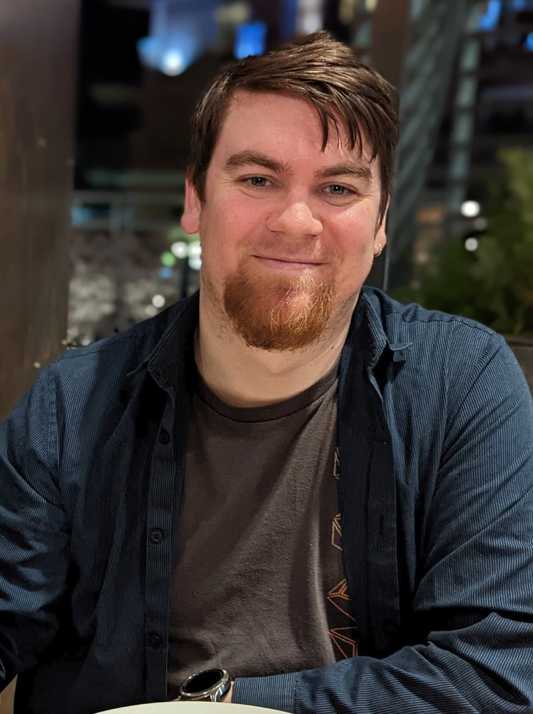

I'm a Licensed Marriage and Family Therapist in Mountlake Terrace, Washington, working with neurodivergent adults, people in transition, and the geek and gaming community — both in traditional therapy and through tabletop roleplaying games.

Good therapy meets you where you actually are — not where a treatment manual assumes you should be.
My practice is built around people whose minds, interests, and life circumstances haven't been well served by conventional approaches. The work is grounded, collaborative, and shaped to fit you.
Weekly therapy for adults navigating depression, anxiety, identity, neurodivergence, and major life transitions. Geek-affirming, transition-friendly, and grounded in real life outside the office.
Learn moreA closed group therapy program using tabletop roleplaying games as a therapeutic tool. Ten weeks, four participants, real growth — through character, story, and shared support.
Learn moreTalks, trainings, podcast appearances, and project-based consultation for clinicians, organizations, and game designers working at the intersection of mental health and gaming culture.
Learn moreForged in Story is a ten-week therapeutic group experience using tabletop roleplaying games — where each participant's personal growth becomes part of a shared story, held by the people at the table with them.
Explore Forged in StoryReach out to schedule a first session, ask a question, or talk through whether we'd be a good fit.
Get in touch